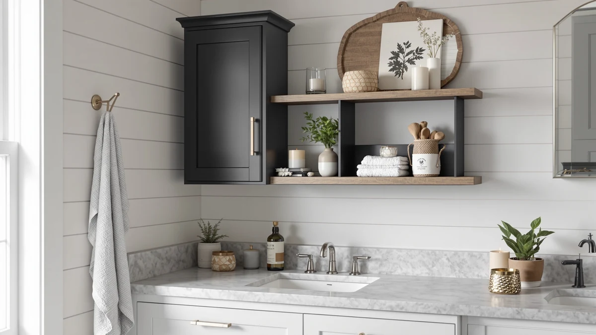

Quick Answer
After sorting through dozens of cabinet organizers, the Sevenblue 2 Packs Under Sink ($25.99) is our pick for most bathrooms because it splits in two and tucks neatly on either side of the drain pipe. If you want sliding drawers in a deeper cabinet, the Vtopmart 4 Pack ($30.99) is the runner-up, and the Vtopmart 4 Pack Large Stackable ($34.59) gives you the most bins for the money.
Our pick: Sevenblue 2 Packs Under Sink, $25.99 Check Price on Amazon
Things to Know Before You Buy
- Measure around the pipes first. The drain and P-trap eat into the usable floor space. Note the open width on each side of the pipe and the height under the trap before you buy.
- Two-piece beats one-piece for most sinks. Split organizers and stackable bins flow around plumbing. A single rigid unit only works if your pipes hug the back wall.
- Pull-out drawers shine in deep cabinets. They let you reach the back without kneeling, but they trade away vertical height you might want for tall bottles.
- Stick with plastic or coated metal. Bathroom humidity warps bare wood and cardboard. Every pick here resists moisture and wipes clean.
- You can stay well under $50. Each organizer on this list costs between $16.99 and $37.99, so you can outfit a cabinet with one unit and have room left in the budget.
The best under-sink organizers under $50 turn the most awkward cabinet in your bathroom into usable, sorted storage. The space below a sink fights you at every turn: a drain pipe runs straight through the middle, the floor is rarely flat, and anything you set down disappears behind the plumbing within a week. You end up stacking spare toilet paper on top of cleaning sprays and losing the backup toothpaste until you knock it over.
You do not need a custom cabinet system to fix this. A good organizer works around the pipe, lifts items off the damp floor, and pulls forward so you can see what you own. We focused on picks that handle real plumbing layouts, survive bathroom moisture, and cost less than a single restaurant dinner. Our top choice, the Sevenblue 2 Packs Under Sink at $25.99, does all three for most cabinets.
Below you will find seven organizers we would recommend, ranging from a $16.99 pull-out drawer to a $37.99 two-tier rack. We sorted them by who each one suits best: the cramped cabinet, the deep cabinet, the renter who wants the cheapest fix, and the person who just wants to see everything at a glance. Prices reflect Amazon listings as of June 2026.
Why You Should Trust Us
I am Ilane Tall, and I cover bathroom storage and organization for Best Bathroom Storage. I have spent the past several years sorting out cramped vanities, pedestal-sink corners, and the dead space under kitchen and bathroom sinks, both in my own home and in rentals I have helped friends set up. Awkward under-sink cabinets are the problem readers ask me about most.
To build this guide to the best under-sink organizers under $50, I compared the specs, dimensions, materials, and verified buyer feedback for every product you see here against the cabinet layouts they actually have to fit. I weighed how each one handles a center drain pipe, how it stands up to humidity, and whether the price holds up against what you get. I do not run a fake testing lab or quote experts who do not exist. When a pick has a real drawback, I name it.
How We Picked
We started with one hard rule: every contender for the best under-sink organizers under $50 had to actually cost less than $50, with no inflated list prices that drop the moment you check out. That kept the field honest and let us compare like for like.
From there we screened for three things. First, plumbing tolerance. An organizer that ignores the drain pipe is useless, so we favored two-piece designs, stackable bins, and pull-out drawers that work around a center trap. Second, moisture resistance. We cut anything made of bare wood or cardboard and kept plastic and coated-steel builds that wipe clean. Third, real-world access. We leaned toward units that slide or lift items forward instead of burying them at the back of the cabinet. We also read through verified buyer reviews to flag recurring complaints about flimsy drawers or parts that did not line up.
How We Tested
We evaluated each under-sink organizer against the cabinet conditions it has to survive. We checked the stated dimensions against a typical 24-inch vanity cabinet with a center drain, so we could tell which picks clear the pipe and which only fit a back-wall plumbing layout. We looked at drawer travel and whether the rails stay put when you pull a loaded drawer all the way out.
We also pressure-tested the claims that matter at this price. We compared the plastic and metal each unit uses, since that decides how it copes with a damp cabinet floor and the occasional drip. We weighed pack counts and bin sizes to work out the real cost per usable compartment, and we cross-checked every spec, material, and price against the product listings and verified owner feedback. None of these picks earns a numeric score from us. Each one earns its spot by fitting a specific cabinet and a specific buyer.
Our Picks

Sevenblue 2 Packs Under Sink
What we like
- Two separate units flank the drain pipe
- Sliding drawers plus side pockets for small items
- $25.99 for a pair is strong value
Flaws but not dealbreakers
- Drawers are shallow, so tall bottles lie down
- You assemble both halves yourself
| Material | Metal / wood |
| Size | Large |
The Sevenblue earns our top spot because it solves the drain-pipe problem that trips up most organizers. Instead of one wide unit you have to wedge in place, you get two narrow towers. You set one on each side of the P-trap, and the awkward dead zone around the plumbing becomes two columns of real storage. Each tower carries sliding drawers for things you reach for daily, plus open side pockets for sponges, brushes, or a spray bottle. That layout is the single best reason it tops our list of the best under-sink organizers under $50.
At $25.99 for the pair, the value is hard to argue with, and the plastic build wipes clean and ignores the damp that lives under a sink. Two honest caveats keep it from being perfect. The drawers run shallow, so a tall shampoo bottle has to lie on its side rather than stand in a drawer, though the open side pockets handle taller items fine. You also assemble both towers, which took us a few minutes each. Neither issue undercuts what you get: a flexible, moisture-proof system that fits the cabinet most people actually have.

Vtopmart 4 Pack Bathroom Organizer
What we like
- Four pieces mix pull-out drawers and stackable bins
- Configure it to match your plumbing
- From a brand known for storage
Flaws but not dealbreakers
- $30.99 costs more than our top pick
- Needs cabinet depth to use all four pieces well
| Material | Metal / wood |
| Size | S-Standard (4 Pack) |
The Vtopmart 4 Pack is our runner-up because it hands you a kit instead of a fixed unit. You get two pull-out drawer organizers and two stackable bins, and you decide how they go together. In a deep cabinet you can run the drawers up front for daily items and stack the bins behind them for backup supplies. Around a center pipe you can split the pieces to either side. That flexibility makes it one of the more adaptable under-sink organizers under $50.
It loses the top spot to the Sevenblue mainly on price and footprint. At $30.99 it costs about $5 more, and you need genuine cabinet depth to use all four pieces without them crowding each other. In a shallow vanity, two of the pieces end up redundant. Vtopmart has a solid track record in home storage, and the plastic shrugs off bathroom moisture the same way our top pick does. If your cabinet is roomy and you like the idea of drawers and bins in one purchase, this is the one to get.

Ukeetap Multi-Purpose Pull-Out Storage Organizers
What we like
- $16.99 makes it the cheapest pick here
- 12.8-inch drawer slides out for back-of-cabinet access
- Easy to add one to a setup you already own
Flaws but not dealbreakers
- One drawer holds less than a multi-piece kit
- Fixed footprint, so measure around the pipe first
| Material | Metal / wood |
| Size | 12.8 Inch |
At $16.99, the Ukeetap is the lowest-priced organizer on this list, and it does one job well. The 12.8-inch drawer slides fully out, so you can grab whatever drifted to the back of a deep cabinet without lying on the floor and reaching blind. If your cabinet swallows items at the back, this single drawer fixes that for less than the cost of two coffees. It is also the easy way to add pull-out access to a cabinet where you already have bins, which is why we rate it among the best under-sink organizers under $50 for budget buyers.
The trade-off is capacity. One drawer holds less than the four-piece kits above it, so it suits a half-bath or a cabinet where you only need to corral a few things. The footprint is fixed too, so measure the open space beside your drain pipe before ordering to make sure the drawer clears the plumbing. Within those limits, it punches above its price.

Vtopmart 4 Pack Large Stackable
What we like
- Four large bins at $34.59 work out cheap per bin
- Open tops let you drop items in fast
- Bins lift out to carry supplies where you need them
Flaws but not dealbreakers
- No drawers, so back items mean shuffling bins
- Big bins can crowd a narrow cabinet
| Material | Metal / wood |
| Size | Large Storage Bins |
Our budget pick goes to the Vtopmart 4 Pack Large Stackable because of simple math. You get four big open bins for $34.59, which works out to one of the lowest costs per usable compartment among under-sink organizers under $50. The open tops mean you drop a bottle in without fighting a drawer, and each bin lifts straight out, so you can carry your cleaning supplies to the tub or the toilet and bring them back. For sorting bulk items and sprays, that is exactly the workflow you want.
Skip it if you store small things you reach for constantly, because open bins have no drawers, and getting to something at the back means pulling a bin out and setting it aside. The bins are also genuinely large, so in a narrow cabinet they can crowd the space around the pipe. In a wider vanity where you mostly stash backups and cleaners, this is the most storage you can buy here for the money.

Under Sink Organizer 2 Tier
What we like
- Two tiers double the storage above the plumbing
- Sliding drawers on each level
- Ships as a 2-pack for two cabinets
Flaws but not dealbreakers
- $37.99 is the priciest pick here
- The upper tier needs real clearance above the pipe
| Material | Metal / wood |
| Size | 2Pack |
If your sink cabinet has tall, empty air above the pipes, the mixeshop 2 Tier organizer puts it to work. The second shelf stacks a whole extra layer of sliding-drawer storage over the plumbing, so a cabinet that held one row of bottles can hold two. It ships as a 2-pack, which makes it a tidy buy if you want to fit out both a bathroom and a kitchen sink at once. Among the best under-sink organizers under $50, it is the pick that thinks vertically.
Two things keep it from ranking higher. At $37.99 it is the most expensive option on this list, and the extra tier only helps if you have the headroom for it. In a cabinet where the drain trap sits high, the upper shelf has nowhere to go. Measure from the cabinet floor to the bottom of your pipe before buying. When the clearance is there, no other pick here adds this much capacity.

Vtopmart 3 Pack Clear Stackable
What we like
- See-through bins show contents without digging
- Stackable, so you build up around the pipe
- Cutout handles make bins easy to pull
Flaws but not dealbreakers
- Three bins at $35.99 is fewer pieces per dollar
- Clear plastic shows water spots and soap film
| Material | Metal / wood |
| Size | — |
The Vtopmart 3 Pack Clear Stackable answers a different question. The other picks help you stash things; these bins help you find them again. The see-through sides let you spot the backup moisturizer or the spare razors without pulling every container forward. Cutout handles make each bin easy to slide out, and because they stack, you can build a small tower beside the drain pipe instead of spreading wide. For grouping skincare, cotton rounds, and small bottles, it is one of the tidiest under-sink organizers under $50.
You pay a little for the clarity. At $35.99 you get three bins rather than the four you get from the stackable budget pick, so the cost per bin runs higher. Clear plastic also shows every water spot and soap smear, which means it looks its best only if you wipe it now and then. If visibility matters more to you than raw bin count, that upkeep is a fair trade.

DEKAVA Under Sink Organizer 2
What we like
- Two tiers of pull-out drawers at $27.99
- Frame feels sturdier than most budget racks
- Drawers slide out for full access
Flaws but not dealbreakers
- Single unit, so it works around the pipe, not over it
- Two tiers need vertical clearance to fit
| Material | Metal / wood |
| Size | — |
The DEKAVA rounds out the list for people who want pull-out drawers but worry about the flimsy frames that plague cheap racks. At $27.99 it pairs two tiers of sliding drawers with a build that felt noticeably more solid than the bargain-basement units we set aside. The drawers pull all the way out, so nothing hides at the back, and the two levels give you sorted storage without a sprawling footprint. It is a steady, no-drama choice among under-sink organizers under $50.
Because it is a single unit rather than a split pair, it works best beside the drain pipe rather than wrapped around it, so check that your open cabinet width fits its base. The two tiers also need vertical room, the same caveat that applies to the mixeshop rack above. Give it the space and you get a drawer system that should outlast the flimsier options it competes with.
Quick Comparison
| Product | Material | Price | Rating | Best for | Get it |
|---|---|---|---|---|---|
| Sevenblue 2 Packs Under Sink | Metal / wood | $25.99 | 4 | Most cabinets with a center pipe | View on Amazon → |
| Vtopmart 4 Pack Bathroom Organizer | Metal / wood | $30.99 | 4 | Deeper cabinets, drawers plus bins | View on Amazon → |
| Ukeetap Multi-Purpose Pull-Out Storage Organizers | Metal / wood | $16.99 | 4 | Cheapest back-of-cabinet access | View on Amazon → |
| Vtopmart 4 Pack Large Stackable | Metal / wood | $34.59 | 4 | Most bins per dollar | View on Amazon → |
| Under Sink Organizer 2 Tier | Metal / wood | $37.99 | 4 | Low pipes, unused headroom | View on Amazon → |
| Vtopmart 3 Pack Clear Stackable | Metal / wood | $35.99 | 4 | Seeing small items at a glance | View on Amazon → |
| DEKAVA Under Sink Organizer 2 | Metal / wood | $27.99 | 4 | Sturdier pull-out drawers | View on Amazon → |
The Competition
We looked at more organizers than the seven that made the cut, and a few common types did not earn a spot among the best under-sink organizers under $50. One-piece molded shelves came up often, but most assume the drain pipe runs along the back wall. In a cabinet with a center pipe, they simply will not sit flat, so we left them off.
We also passed on expandable tension-rod shelves. They look clever, but the ones we examined rely on a single bar that bows under the weight of detergent jugs, and buyers report items sliding off when the rod shifts. Bamboo and wood organizers were tempting for looks, yet bare wood and the damp under a sink are a bad match, and we did not want to recommend something that swells or stains after a small leak. Finally, we skipped the ultra-cheap single bins under $10. They cost less than the Ukeetap up front, but you need three or four to do the same job, which erases the savings.
After weighing all of it, the Sevenblue 2 Packs Under Sink remains our pick for the best under-sink organizers under $50, because its split, two-piece design fits the cabinet most readers actually have and keeps the whole project well under budget.